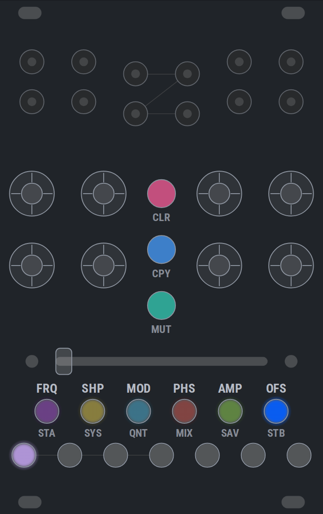
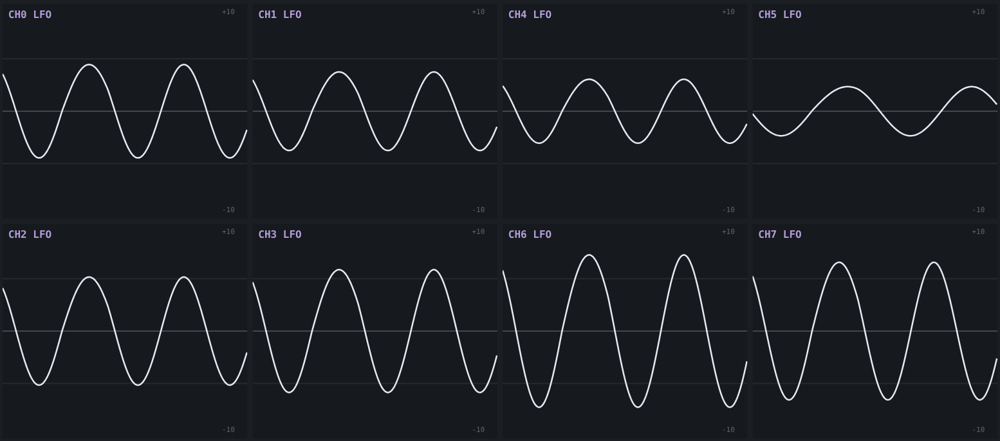

What it is
Eight channels, each a low-frequency oscillator with six parameters, an output jack and an endless encoder. Seven scenes, numbered 0–6, each holding a complete set of those parameters for all eight channels. The crossfader blends between two of them, so one slider morphs the whole patch.
Channel frequencies are ratios of the incoming beat rather than free rates, so everything stays in phase with the rest of the patch. With no clock the module free-runs at the last tempo it saw.
A module fresh out of the box is silent, because AMP is zero everywhere. Tap AMP and wind a channel's encoder up — that is the whole of making a sound.
Everything on this page can be tried without hardware on the simulator, which runs the module's own firmware compiled for the browser.
The panel
- Four input jacks, eight output jacks
- The outputs sit under their own encoders. What each input is for is set under SYS: a clock, a reset, the crossfader, or a plain voltage a channel can mix in.
- Eight encoders
- One per channel, endless, and each is a button as well. Turning edits whatever the parameter row has selected; pressing does whatever the open page does with a press. Hold one in while turning for fine adjust.
- Seven scene buttons
- Scenes 0–6, the ones the crossfader blends between. Every page borrows the row for something — semitones, preset slots, input modes — so what they do depends on which page is open.
- The parameter row
- FRQ SHP MOD PHS AMP OFS. Tap to choose what the eight encoders edit; each glows in its own colour, so the row says which colour means which parameter.
- Three coloured caps
- CLR CPY MUT. Plain plastic, not lit — they are pages, not settings.
- The crossfader
- Blends scene A into scene B across every channel at once.
Holding a control button opens a page. Hold any of the nine for a moment: the panel repaints, and the encoders and scene buttons mean something else. Let go having done nothing and the page latches until you tap the same button — or any of the three unlit caps — to leave. Do something while still holding it, and letting go closes the page as well, so a page can be played as a modifier with one hand.

The six parameters
Every one of these is per channel and per scene, so the crossfader moves all forty-eight of them together.
- FRQ — frequency
- A ratio against the beat, not a rate, so a channel stays locked to the tempo wherever it is set. Fine adjust steps between the ratios rather than by a fixed amount.
- SHP — shape
- In the default wavetable mode, one continuous axis that wraps: square fully left, sine at centre, triangle, a pointy extreme, and round to the square again. In the other two shape modes it is the pulse width, or the stepped pattern morph — see shape modes.
- MOD — the second axis
- Whatever the shape mode's second dimension is: wavetable skew, stepped motion, or the PWM envelope. Negative leans early, positive leans late — except in stepped, where negative is busy and positive sparse. See MOD, mode by mode.
- PHS — phase offset
- Where in its cycle the channel starts. Phase 0 is the rising edge in every shape, so a square channel at a whole division is a clock divider whose gate opens on the beat.
- AMP — amplitude
- How far the channel swings.
- OFS — offset
- A fixed voltage added to the output.

With no page open, pressing a parameter button clears that parameter in the active scene; holding clears it in every scene. Holding while turning is fine adjust and clears nothing.
Scenes and the crossfader
A scene is a complete set of parameters for all eight channels. Dial a state and assign it to A; dial another and assign it to B. The crossfader is now a transition between them, and one hand moves every channel at once.
This is the reason the module is not simply eight LFOs. Scenes are assigned under STA and STB, copied under CPY, cleared under CLR — and an input jack set to SLIDER mode is summed into the fader, so the blend can be driven by a cable as well as by hand.
With no page open, holding a scene button makes that scene active for as long as you hold it.
The nine pages
Hold to open; tap the same button — or MUT, CPY, CLR — to leave. Keep the button held through whatever you came to do and the release leaves for you. The other five lit buttons do nothing while a page is open, so the parameter row cannot close the page under you. Below, "scenes" means the row of seven and "encoders" means the row of eight.
- STA / STB — assign scenes
- Scenes: pick which scene the crossfader blends from, and towards. Encoders on STA: stepped pattern length, per channel rather than per scene — there is nothing between 8 steps and 12, so a crossfaded value would mean nothing. Dark on channels that are not in a stepped mode.
- SYS — system and channel modes
- Scenes: the first four set what input jacks 0–3 are for. Encoders: the channel's shape mode — wavetable, stepped, or PWM.
- QNT — quantizer
- Scenes: switch semitones in and out of the scale. Encoders: turn for the channel's quantize mode, press to assign its sample trigger. A channel used as another's trigger has to cross 1.25V to count, the same voltage an input jack wants, so a very low-amplitude LFO will not clock anything.
- MIX — cross modulation
- Scenes: show what the four inputs are doing. Encoders: press to pick the input a channel mixes in, turn to choose how — off, added, or multiplied.
- SAV — save and load
- Scenes: seven preset slots, 0–6, each holding the whole module rather than one scene. Encoders: the channel's output clamp — ±10V, ±5V, 0..10V, 0..5V. A clamp, not a scaling, so the parameters keep meaning what they say; it describes what the module is patched into rather than what the patch is, which is why it is not per scene.
- MUT — mute
- Encoders: press to mute that channel, or turn — right unmutes, left mutes, so a row can be muted by feel. Ramped over 5ms so it does not click. A muted channel keeps running: it still feeds cross-modulation and still works as a trigger source. Mute clears on a power cycle.
- CPY — copy
- Pick a scene or a channel to copy from, then one to copy to. Channel to channel carries the whole channel — its parameters in the active scene plus its shape mode and pattern length, its MIX routing and its QNT mode and trigger — but not the output clamp, for the same reason a hold-clear leaves that alone. Channel to scene copies that channel's parameters into another scene; scene to scene does it for every channel at once.
- CLR — clear
- Scenes: pick a scene to clear. Encoders: tap clears that channel in the active scene; hold clears it everywhere — every scene, its MIX routing, its QNT mode and trigger, its shape mode and pattern length. Not the output clamp.
Holds that destroy something show what they are about to do while you hold them, and only act on release. A held press dips out once as it crosses each threshold — that is the module saying the press registered, not that something is in progress.
Shape modes, and what SHP does in each
A channel is in one of three shape modes, set with the encoders under SYS. The mode decides what its two shape knobs mean. SHP is the primary axis in all three; MOD is the second, and has a section of its own below.
- Wavetable — SHP is a slice of the table
- Square fully left, sine at centre, triangle at +0.375, a pointy extreme at +0.625, and round to the square again. The axis is a loop: −1 and +1 are the same slice, so turning the encoder forever cycles the shapes rather than stopping at an end. There is no saw slice, because skew (MOD) makes one out of the triangle.
- PWM — SHP is the pulse width
- Centre is a square; fully left and fully right are the narrowest and widest pulses. Unlike the other two this axis does not wrap — it is a width, and it stops just off both end stops, at 2% and 98%, so the pulse never disappears entirely.
- Stepped — SHP is the distribution
- Cyclic, like the wavetable: −1 and +1 are the same place. It is not a bank of unrelated patterns to scroll past — a small turn deforms what is playing rather than redrawing it. Nor is it random: every value follows from the knobs, the length and the beat, so the same setting is the same pattern every time. Pattern length is separate, and per channel rather than per scene — under STA.
Every wavetable setting reaches the full swing and has no DC offset, between slices as well as on them. Phase 0 is the rising edge in every shape: it is where PWM opens its gate and where the stepped mode starts step 0, so a square channel at a whole division is a clock divider whose gate opens on the beat.
What SHP moves in stepped:
- The distribution the values are drawn into
- One traversal, ends first. Hard left the pattern sits low with the peaks still reaching — modulation that stays down and occasionally spikes. Centre is even. Hard right the values are pushed away from the middle and bunch against both rails, which reads as gates rather than as levels.
- How the values are gathered
- Five times across the sweep, values are pulled onto a few levels and released again, so the pattern reads as plateaus at one point and as a continuous spread a little further on. It is a squeeze, not a quantiser: the ramps between the levels survive.
- Which values the steps hold, and how they move
- Underneath both, every step rides its own slow orbit and SHP advances all of them at once, along with how the values are spread and how melodic the contour is — each at its own rate, so they keep recombining rather than repeating.
A small turn deforms what is playing rather than redrawing it, and that is a guarantee rather than a feeling: the steps keep their order. The two reshapings above cannot break it however hard they are driven, which is why they can be driven hard.
What SHP does not move is how loud it is. Every setting comes out at much the same swing, so a turn changes what the pattern does and not how much of it there is — that is what AMP is for. Where it sits is SHP's business, which is the distribution above.
Where a given character sits on SHP depends on where MOD is, because MOD carries the pattern part of the way round the same loop — see a share of the orbit opposite. That is the point: the two knobs cover a surface, not two independent lines.
MOD, mode by mode
- Wavetable — skew
- A phase warp that pins both ends of the cycle, so the shape leans without the cycle changing length or acquiring an offset. A sine becomes a skewed sine; a triangle becomes a ramp, which is where the saw comes from. At 0 the phase is passed through untouched.
- PWM — an attack and decay inside the pulse
- How much of the pulse is ramp rather than plateau, and how that ramp is split between its two ends. At 0 it is a hard gate, so the channel is still a clock divider. Part way round you get an attack, a plateau and a decay — an AD envelope, biased toward the decay on the negative side and toward the attack on the positive. Fully left is one decay filling the pulse, which is the percussive shape; fully right is one attack and then a hard drop. Both ramps stay inside the pulse, so SHP is the envelope's length as much as the gate's width — a short trigger with a long tail is a wide SHP at MOD fully left. The ramps are curved rather than linear — the attack quick off the floor and easing into the plateau, the decay steep with a tail — which is what makes them read as an envelope and not a triangle.
- Stepped — motion: density and the ease together
- One axis from flowing to hard. Fully left every step takes a new value and the curve is fully slewed between them — a continuous wander with no edges in it. Fully right most steps tie to the one before and the curve sits still on each, which is a handful of long held notes. Density, the ease, which steps tie, how far the beat swings and whether the cycle repeats a quarter-length phrase all move together along it. This axis is monotone — unlike SHP it does not wrap, and −1 and +1 are opposite ends. The tie is a crossfade, not a switch, so a half-tied step is a smaller interval and the knob moves the pattern everywhere on its travel rather than sitting still and then lurching.
Where MOD leans something the sign means the same thing everywhere: negative leans early, positive leans late. Stepped is the exception, because motion has no early or late — there negative is busy and flowing, positive sparse and held.
A narrow pulse with MOD hard left is a percussive envelope locked to the beat.
The six that travel together, and what each one changes about the pattern:
- The ease
- How much of a step is spent sitting at its value before moving to the next. Fully left there is no sitting at all and the curve is always travelling; fully right it holds for most of the step and moves in a short slide. This is what turns a pattern into an envelope at one end and a held sequence at the other, and it is why the same knob carries the density: both are asking how much the curve stands still.
- Which steps tie
- Each step's threshold rotates as MOD moves, so the tied set keeps re-arranging rather than simply growing. Without it, ties would nest — once a step tied it stayed tied — and the knob could only ever thin one pattern instead of reaching a different one. Every fourth step is pinned to take its own value whatever the density, which is what stops the far end of the knob flattening the pattern and keeps the loop point closing on the same value.
- Swing
- Alternate steps run long and short. Zero at centre and at both extremes, strongest around ±0.5 and leaning the opposite way on either side — so straight time in three places and a shuffle between them. The widths always sum to one cycle, so the loop still closes wherever the knob is.
- Motif repeat
- Towards either end, the cycle folds onto a quarter-length sub-phrase and the pattern starts repeating a riff; at centre it is through-composed. The repeat comes out varied rather than as a literal copy, because the tie pattern still runs the full length. Only from 16 steps up — below that a quarter cycle is not a phrase.
- A second layer of the spread
- The same calm-versus-gate-like shaper SHP drives, with its own shallower layer on MOD running three times across the sweep, on top of whatever SHP has set.
- A share of the orbit
- The one that matters most. MOD also carries the step values part of the way along the loop SHP drives, so it reaches patterns SHP never lands on — it is not only thinning and recolouring whichever pattern SHP picked.
Five places to start, at 16 steps or more. Hard left: a new value every step, straight time, and the quarter-cycle riff at full depth — a sample-and-hold that has a shape to it. −0.5: about one step in seven tied, the shuffle at its deepest leaning one way, the riff half stated. 0: the neutral pattern — about a third of the steps tied, straight time, no repeat, and both shaper layers at rest. +0.5: three-fifths tied, the shuffle at its deepest the other way, the riff half stated again. Hard right: three steps in four tied, which is the ceiling, straight time, the riff back at full depth — nearer a chord progression than a modulation source.
Note what that list does not do: it never revisits the same pattern. Density, the shuffle and the riff each turn over at their own rate, and the orbit share moves the values themselves the whole way, so the two ends have opposite densities and different notes rather than the same pattern thinned out.
The USB port
The module publishes its eight outputs and four inputs as MIDI control changes and forwards its clock, so the same eight clock-locked LFOs modulate a DAW's plugins as readily as they modulate a rack. It takes MIDI Clock in as well, as the clock source when no jack is patched for the job.
The same cable carries a second, vendor interface. That is what the simulator uses to show a physical module and drive it, what the updater uses to reboot it into its bootloader, and what the diagnostics page measures.